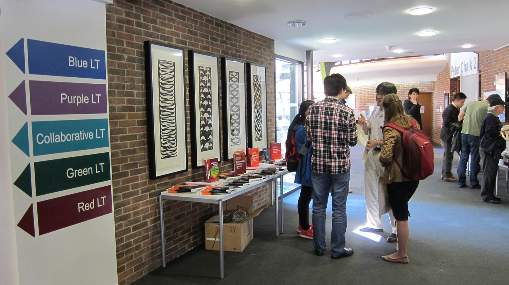

Jane Pratt
Conferences
Dynamics Days Europe XXXV (September 2015)
I worked as part of the local organizing committee to organize
Dynamics Days Europe XXXV
in 2015, held at the University of Exeter.
I also worked to organize two minisymposia at this conference on Astrophysical Plasmas and Turbulent Dispersion.
Book of Abstracts
Conference Booklet
Public Lecture Poster
Conference Poster
